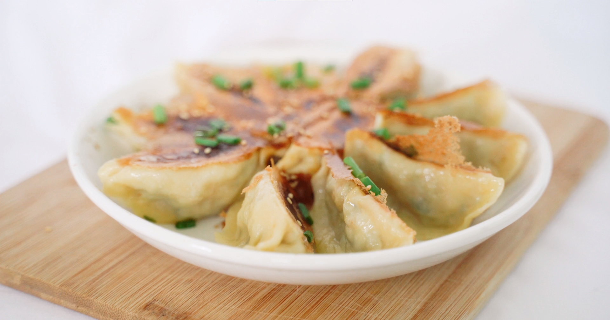
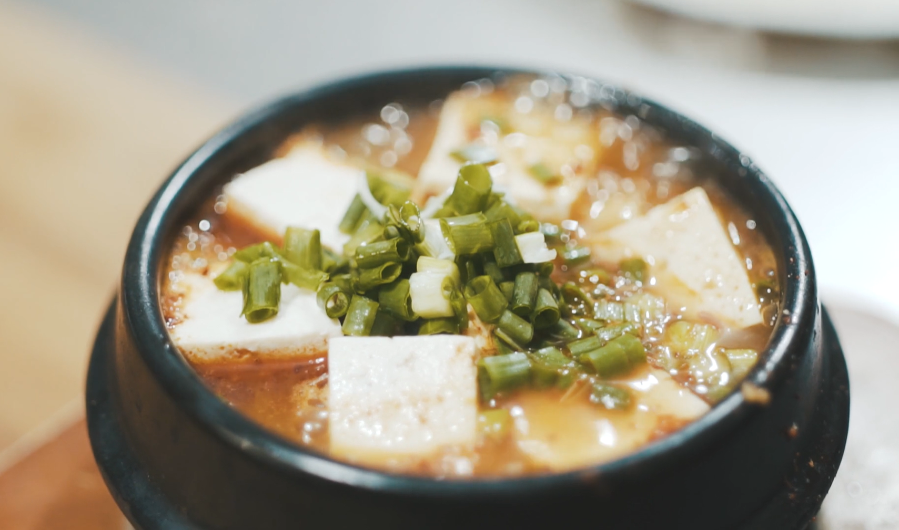
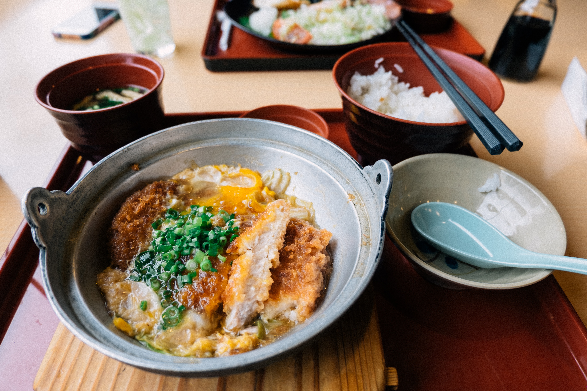
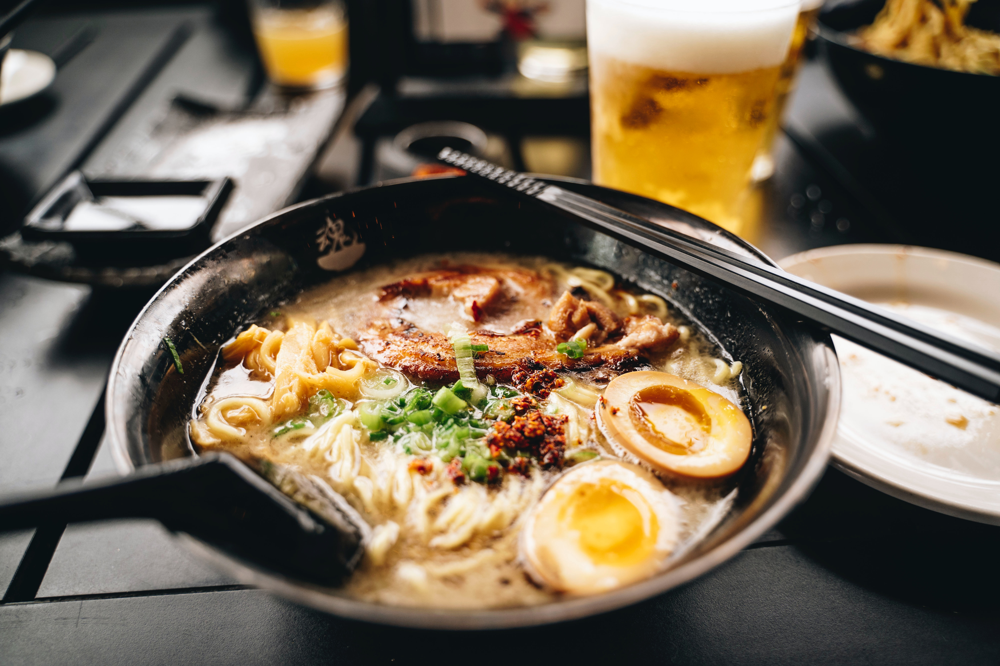
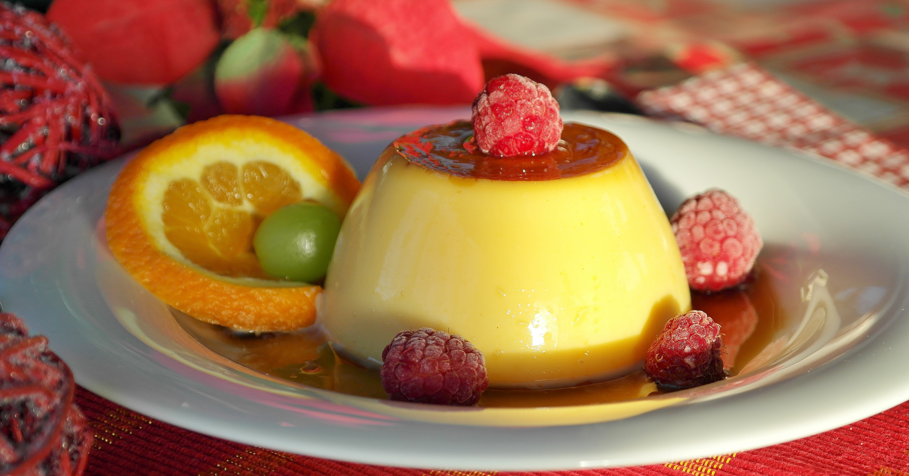
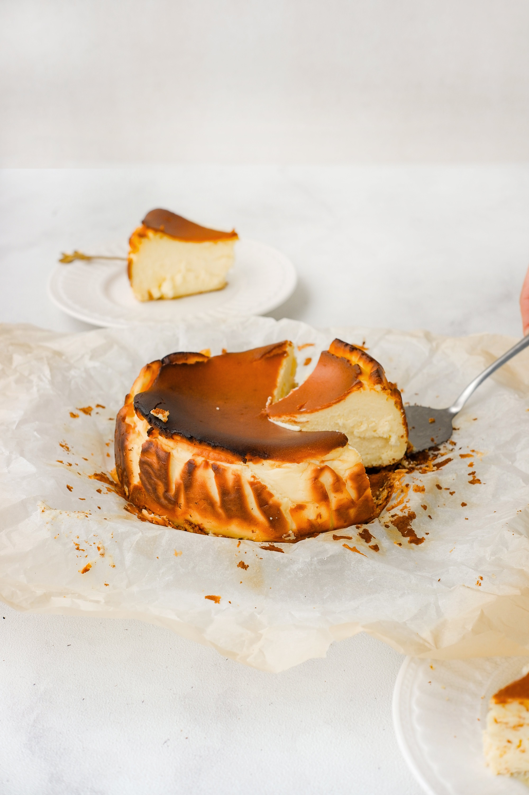
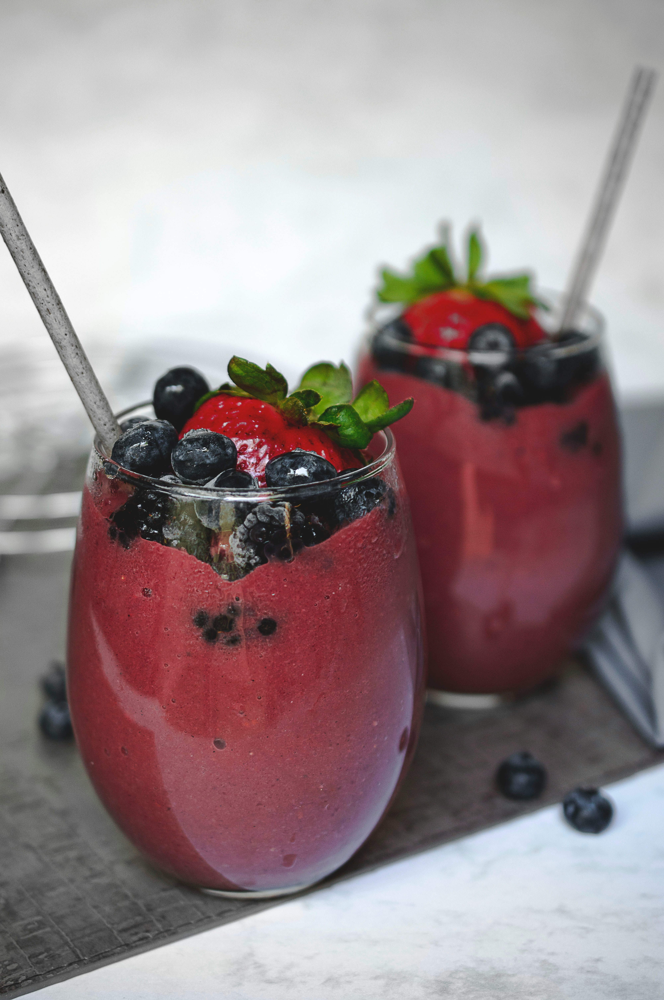

Nos recettes
Dans cette collection de recettes, vous trouverez une variété de délicieux plats qui sauront satisfaire vos papilles gustatives. Que vous recherchiez des classiques réconfortants, des options saines ou des saveurs audacieuses, vous trouverez ce qu'il vous faut. Chaque recette est soigneusement conçue et accompagnée d'instructions étape par étape, ce qui facilite la réalisation de ces délicieux plats dans votre propre cuisine.

Dumplings
Les dumplings, ou boulettes, sont un plat populaire dans de nombreuses cultures à travers le monde. En français, on les appelle généralement "raviolis" ou "boulettes". Les dumplings sont préparés en enveloppant une pâte autour d'une garniture, qui peut être salée ou sucrée. Ils peuvent être cuits à la vapeur, bouillis ou frits. Les dumplings sont souvent servis avec une sauce savoureuse et peuvent être farcis avec divers ingrédients tels que de la viande, des légumes, des fruits de mer ou même du chocolat. Ils sont délicieux et peuvent être appréciés comme plat principal ou en tant que collation. Bon appétit!
Temps de préparation
30 min.
Temps de cuisson
5 min.
Nombre de portions
2 portions
Tags : Dumplings
entrée
Halal
instructions
-
Étape 1 : Préparer la farce
Dans un bol, mélanger la viande hachée, l'oignon finement haché, l'ail émincé, le gingembre râpé, la sauce soja, l'huile de sésame, le sel et le poivre.
Bien mélanger jusqu'à ce que tous les ingrédients soient incorporés de manière homogène.
-
Étape 2 : Préparer les enveloppes des raviolis
Prendre les enveloppes de raviolis (pâte à raviolis) et les placer sur une surface plane.
Déposer une petite quantité de farce au centre de chaque enveloppe de raviolis.
-
Étape 3 : Fermer les raviolis
Humidifier les bords de l'enveloppe avec de l'eau pour faciliter la fermeture.
Plier l'enveloppe en deux, formant une demi-lune.
Pincer et plisser les bords ensemble pour sceller les raviolis. Répéter pour tous les raviolis.
-
Étape 4 : Cuire les raviolis
Porter une grande casserole d'eau à ébullition.
Délicatement, ajouter les raviolis dans l'eau bouillante.
Laisser cuire pendant environ 4 à 5 minutes ou jusqu'à ce que les raviolis remontent à la surface.
Une fois cuits, retirer les raviolis de l'eau à l'aide d'une écumoire et les égoutter.
ingrédients
| Pâte à raviolis |
200g |
| Viande hachée |
200g |
| Oignon |
1 petit |
| Ail |
1 gousse |
| Gingembre |
1/2 cuillère à café |
| Sauce soja |
2 cuillères à soupe |
| Huile de sésame |
1 cuillère à café |
| Sel |
Au goût |
| Poivre |
Au goût |
| Eau |
Pour la cuisson |

Soup miso
La soupe miso est un plat traditionnel japonais fait à partir de pâte de miso, un condiment fermenté à base de soja, de riz et d'autres ingrédients. On prépare la soupe en mélangeant la pâte de miso avec un bouillon à base de dashi, un bouillon de poisson ou d'algues. On peut ajouter différents ingrédients tels que le tofu, les algues, les légumes et les champignons à la soupe miso. La soupe miso est appréciée pour ses saveurs uniques et ses bienfaits pour la santé, car elle est riche en vitamines, minéraux et probiotiques bénéfiques pour la digestion et le système immunitaire.
Temps De Préparation
15 min.
Temps De Cuisson
15 min.
Nombre De Portions
1-2 servings
Tags : entrée
Halal
soupe
Instructions
-
Étape 1 : Préparation des ingrédients
Coupez le tofu en dés (50g), dissolvez 1 cuillère à soupe de miso dans une petite quantité d'eau chaude, hachez 1 prune umeboshi, faites tremper 1 cuillère à café d'algues wakame dans de l'eau, et hachez finement 1 petite échalote.
-
Étape 2 : Préparation du bouillon
Portez à ébullition le bouillon de légumes (200ml) et l'eau (150ml) dans une casserole.
-
Étape 3 : Ajout des ingrédients
Ajoutez le tofu, l'umeboshi, les algues wakame et l'échalote dans la casserole.
-
Étape 4 : Cuisson
Faites cuire pendant quelques minutes jusqu'à ce que les ingrédients soient bien chauds.
-
Étape 5 : Servez chaud
Retirez du feu, incorporez la miso dissoute, et servez chaud.
ingrédients
| Tofu |
50g |
| Miso |
1 cuillère à soupe |
| Prune umeboshi |
1 |
| Algues wakame |
1 cuillère à café |
| Échalotes |
1 petite |
| Bouillon de légumes |
200ml |
| Eau |
150ml |

Katsudon
Le katsudon est un plat japonais populaire qui se compose de porc pané et frit, d'œufs brouillés, de riz et d'une sauce sucrée-salée. Les tranches de porc panées sont cuites jusqu'à ce qu'elles soient croustillantes, puis mélangées avec des oignons dans une sauce savoureuse à base de sauce soja, de mirin et de bouillon dashi. Le tout est ensuite versé sur du riz et garni d'œufs brouillés. C'est un plat copieux et réconfortant, apprécié pour son mélange de textures croustillantes et moelleuses, ainsi que ses saveurs délicieuses.
Temps de préparation
30 min.
Temps de cuisson
15 min.
Nombre de portions
2 portions
Tags : Riz
Porc
Plat principal
instructions
-
Étape 1 : Préparer la viande panée
Dans un bol, battre les œufs.
Enrober la viande de porc dans les œufs battus.
Rouler la viande panée dans la chapelure, en vous assurant qu'elle soit bien recouverte.
Répéter pour chaque morceau de viande.
-
Étape 2 : Frire la viande panée
Dans une poêle profonde, chauffer une quantité généreuse d'huile de cuisson.
Ajouter les morceaux de viande panée dans la poêle préchauffée.
Les faire frire des deux côtés jusqu'à ce qu'ils soient dorés et croustillants.
Retirer les morceaux de viande de la poêle et les égoutter sur du papier absorbant pour enlever l'excès d'huile.
-
Étape 3 : Préparer la sauce Katsudon
Dans une casserole, mélanger la sauce soja, le mirin, le sucre et le bouillon dashi.
Porter le mélange à ébullition, puis réduire le feu et laisser mijoter pendant quelques minutes jusqu'à ce que le sucre soit dissous et que la sauce soit légèrement épaissie.
-
Étape 4 : Assembler le Katsudon
Dans une autre poêle, faire chauffer une petite quantité d'huile de cuisson.
Ajouter les oignons tranchés dans la poêle chaude et les faire revenir jusqu'à ce qu'ils soient tendres et légèrement caramélisés.
Ajouter les morceaux de viande panée dans la poêle avec les oignons.
Verser la sauce Katsudon sur la viande et les oignons dans la poêle.
Casser les œufs dans la poêle et remuer légèrement pour mélanger les œufs avec la sauce.
Couvrir la poêle et laisser mijoter pendant quelques minutes jusqu'à ce que les œufs soient cuits à votre goût.
Servir le Katsudon chaud sur un lit de riz cuit.
Garnir facultativement avec des oignons verts ou du gingembre mariné.
ingrédients
| Côtelettes de porc désossées |
200g |
| Œufs |
2 |
| Chapelure |
50g |
| Oignon (tranché) |
1 petit |
| Sauce soja |
2 cuillères à soupe |
| Mirin |
2 cuillères à soupe |
| Sucre |
1 cuillère à café |
| Bouillon dashi |
120ml |
| Huile de cuisson |
Au besoin |
| Riz cuit |
Au goût |
| Oignons verts ou gingembre mariné (garniture, facultatif) |
Facultatif |

Ramen de Sapporo
Le Ramen de Sapporo est un plat de nouilles japonais originaire de la région de Sapporo, au Japon. Il consiste en un bol de nouilles épaisses servies dans un bouillon savoureux à base de pâte de miso, de sauce soja et de bouillon de poulet. Le plat est généralement accompagné de tranches de porc cuit, d'oignons verts, de maïs et d'algues. Le Ramen de Sapporo est apprécié pour sa combinaison de saveurs riches et son aspect réconfortant.
Temps de préparation
30 min.
Temps de cuisson
20 min.
Nombre de portions
2-3 portions
Tags : Ramen
Porc
Nouilles
Plat principal
instructions
-
Étape 1 : Cuire les nouilles
Portez une casserole d'eau à ébullition et ajoutez les nouilles. Faites-les cuire selon les instructions sur l'emballage ou jusqu'à ce qu'elles soient al dente (fermes sous la dent). Égouttez-les et mettez-les de côté.
-
Étape 2 : Préparer les garnitures
Tranchez le porc en fines lamelles. Dans un bol séparé, mélangez la pâte de miso et la sauce soja pour créer une sauce miso. Coupez les oignons verts en petits morceaux. Mettez de côté le maïs et les algues.
-
Étape 3 : Préparer le bouillon
Dans une grande casserole, chauffez le bouillon de volaille jusqu'à ce qu'il frémisse. Ajoutez la sauce miso et remuez jusqu'à dissolution. Laissez mijoter pendant quelques minutes pour permettre aux saveurs de se mélanger.
-
Étape 4 : Cuire le porc et assembler le ramen
Dans une poêle, faites cuire les lamelles de porc à feu moyen jusqu'à ce qu'elles soient dorées et bien cuites. Placez une portion de nouilles cuites dans un bol de service. Versez le bouillon miso chaud sur les nouilles. Garnissez avec les lamelles de porc cuites, les oignons verts, le maïs et une feuille d'algue.
ingrédients
| Nouilles |
200g |
| Porc |
150g |
| Pâte de miso |
2 cuillères à soupe |
| Sauce soja |
1 cuillère à soupe |
| Bouillon de poulet |
500ml |
| Oignons verts |
2 tiges |
| Maïs |
1/2 tasse |
| Algues |
1 feuille |

Flan
Le flan, également connu sous le nom de "Purin" en japonais, est un dessert populaire au Japon. Il s'agit d'un pudding crémeux à base d'œufs, de lait et de sucre. La texture est lisse et veloutée, et il est souvent parfumé à la vanille. Le flan est cuit au four dans un bain-marie, ce qui permet d'obtenir une texture douce et légèrement tremblotante. Il est traditionnellement servi froid et démoulé, avec un caramel liquide délicieusement sucré à la surface. Le flan japonais est apprécié pour sa douceur et sa légèreté, et il est souvent accompagné de fruits frais ou de crème fouettée pour ajouter une touche de fraîcheur. C'est un dessert simple et délicieux, parfait pour les amateurs de desserts crémeux.
Temps de préparation
20 min.
Temps de cuisson
45 min.
Nombre de portions
4 portions
Tags : Flan
Desserts
Halal
Instructions
-
Étape 1 : Préchauffez le four
Préchauffez le four à 160°C (320°F).
-
Étape 2 : Mélange des ingrédients
Dans un bol, mélangez 3 œufs, 100g de sucre et 1g d'extrait de vanille. Dans une casserole séparée, faites chauffer 500g de lait à feu doux jusqu'à ce qu'il commence à fumer, puis versez lentement le lait chaud dans le mélange d'œufs en fouettant continuellement.
-
Étape 3 : Préparation du flan
Dans un petit bol, dissolvez 40g de poudre à flan dans 500g d'eau, puis ajoutez le mélange de poudre à flan au mélange d'œufs et de lait tout en remuant constamment.
-
Étape 4 : Bain-marie et Cuisson au four
Versez le mélange dans des ramequins individuels ou un grand plat allant au four.
Placez les ramequins ou le plat dans un autre plat plus grand et remplissez-le à moitié d'eau chaude,
puis transférez délicatement le plat au four préchauffé et faites cuire pendant environ 40 à 45 minutes.
-
Étape 5 : Refroidissement
Retirez du four et laissez refroidir le flan à température ambiante, puis placez au réfrigérateur pendant au moins quelques heures.
Avant de servir, arrosez de la sauce caramel selon votre goût.
ingrédients
| Oeufs |
3 |
| Lait |
500g |
| Sucre en poudre |
100g |
| Extrait de vanille |
1g |
| Poudre à flan |
40g |
| Eau |
500g |
| Sauce caramel |
Au goût |

cheesecake
Le gâteau au fromage japonais, également connu sous le nom de "Japanese Cheesecake" en anglais, est un dessert délicat et léger d'origine japonaise. Il se distingue des autres cheesecakes par sa texture soufflée et aérienne.
Contrairement au cheesecake traditionnel, le gâteau au fromage japonais est préparé en incorporant les blancs d'œufs battus en neige dans le mélange de fromage à la crème. Cette méthode donne au gâteau une texture moelleuse et une saveur subtilement sucrée.
Il est généralement servi réfrigéré pour obtenir la meilleure texture et est souvent accompagné de fruits frais ou de coulis.
Temps de préparation
20 min.
Temps de cuisson
45 min.
Nombre de portions
8 portions
Tags : Gâteau
Desserts
Halal
Instructions
-
Étape 1 : Mélange des ingrédients
Dans un bol, battre le fromage à la crème jusqu'à une consistance crémeuse.
Ajouter le sucre, les blancs d'œufs battus en neige, puis ajoutez le jaune d'oeuf et le jus de citron, ensuite bien mélanger.
Ajouter également la fécule de maïs, le lait et le beurre fondu, et bien mélanger jusqu'à obtenir un mélange homogène.
-
Étape 2 : Préparation du gâteau
Verser le mélange au fromage à la crème dans le moule à gâteau
-
Étape 3 : Cuisson du gâteau
Préchauffer le four à 180°C (350°F).
Cuire le gâteau pendant environ 45 minutes à 1 heure, ou jusqu'à ce qu'il soit bien doré et se soit solidifié sur les bords avec un centre légèrement tremblotant.
-
Étape 4 : Refroidissement et service
Laisser le gâteau refroidir complètement dans le moule.
Après le refroidissement, démouler délicatement le gâteau.
Réfrigérer pendant au moins 4 heures avant de servir pour obtenir une texture légère et moelleuse.
ingrédients
| Œufs |
3 |
| Fromage à la crème |
250g |
| Sucre |
100g |
| Maïzena |
40g |
| Lait |
100ml |
| Beurre |
50g |
| Jus de citron |
1 cuillère à soupe |
| Farine à gâteau |
60g |
boba
Le Boba est une boisson populaire au Japon, d'origine taïwanaise. Elle est préparée avec des perles de tapioca cuites, qui sont de petites boules gélatineuses à base d'amidon de tapioca. Les perles de tapioca sont cuites dans de l'eau bouillante, puis mélangées avec du lait sucré et parfois du thé. Le résultat est une boisson rafraîchissante et texturée, avec les perles de tapioca donnant une sensation agréable de mâcher à chaque gorgée. Le Boba peut être servi avec une paille spéciale plus large pour permettre de boire les perles de tapioca. Il existe de nombreuses variantes de saveurs disponibles, notamment au thé au lait, au fruit, ou même des versions sans caféine. Le Boba est très apprécié dans de nombreux pays à travers le monde et constitue une délicieuse alternative aux boissons traditionnelles.
Temps de préparation
20 min.
Temps de cuisson
15 min.
Nombre de portions
2 portions
Tags : Boba
Boisson
Halal
Instructions
-
Étape 1 : Faire bouillir de l'eau
Faites bouillir de l'eau dans une casserole.
-
Étape 2 : Cuire, égoutter et rincer les perles de tapioca
Ajoutez les perles de tapioca dans l'eau bouillante et faites-les cuire selon les instructions du paquet. Une fois les perles de tapioca cuites, égouttez-les et rincez-les à l'eau froide.
-
Étape 3 : Chauffer le lait et Ajoutez le sucre
Dans une autre casserole, chauffez le lait à feu moyen, puis ajoutez le sucre dans le lait chaud et mélangez jusqu'à ce qu'il soit complètement dissous.
-
Étape 4 : Préparer le thé (optionnel)
Si vous souhaitez un thé à la bobine, préparez-le séparément selon les instructions du paquet.
-
Étape 5 : Assembler les ingrédients
Répartissez les perles de tapioca cuites dans des verres. Versez le lait chaud (et le thé, si vous en utilisez) sur les perles de tapioca.
-
Étape 6 : Mélanger et servir
Remuez doucement pour mélanger les ingrédients. Laissez refroidir légèrement et servez avec une paille épaisse.
ingrédients
| Perles de tapioca |
1 tasse |
| Lait |
200 ml |
| Sucre |
2 cuillères à soupe |
| Thé (optionnel) |
1 sachet |

Smoothie à la myrtille et fraise avec de l'amazake
Le smoothie à la myrtille et à la fraise avec de l'amazake est une boisson rafraîchissante et nutritive, réalisée en mélangeant des myrtilles, des fraises et de l'amazake, qui est populaire au Japon. L'Amazake est une boisson traditionnelle japonaise à base de riz fermenté, appréciée depuis des siècles. C'est une façon simple et délicieuse de savourer les saveurs de ces fruits tout en bénéficiant de leurs qualités bénéfiques pour la santé. Le smoothie obtenu dans cette recette est crémeux, fruité et riche en antioxydants et en vitamines provenant des baies. Il peut être dégusté au petit-déjeuner ou en collation, offrant ainsi un démarrage savoureux et énergétique pour la journée.
Temps de préparation
5 min.
Temps de cuisson
5 min.
Nombre de portions
1-2 portions
Tags : Boisson
Smoothie
Halal
Instructions
-
Étape 1 : Lavez les myrtilles et les fraises
Lavez soigneusement les myrtilles et les fraises pour enlever toute saleté ou débris.
-
Étape 2 : Préparez les fraises
Retirez les tiges et les feuilles des fraises, puis coupez-les en morceaux plus petits pour faciliter le mélange.
-
Étape 3 : Mixez les ingrédients
Placez les myrtilles, les fraises et l'amazake dans un mixeur. Mixez les ingrédients à vitesse élevée jusqu'à ce que vous obtenez un mélange lisse et homogène. Vous pouvez arrêter le mixeur et racler les côtés pour vous assurer que tout est bien mélangé.
-
Étape 4 : Ajustez la saveur
Une fois le mélange lisse et crémeux, goûtez-le et ajustez la douceur si nécessaire. Vous pouvez ajouter un édulcorant comme du miel ou du sirop d'érable si vous le souhaitez.
-
Étape 5 : Garnissez (facultatif)
Après avoir verser le smoothie dans des verres ou des tasses, vous pouvez garnir le smoothie avec quelques myrtilles fraîches ou des fraises tranchées sur le dessus.
ingrédients
| Myrtilles |
1 tasse |
| Fraises |
1 tasse |
| Amazake |
1/2 tasse |